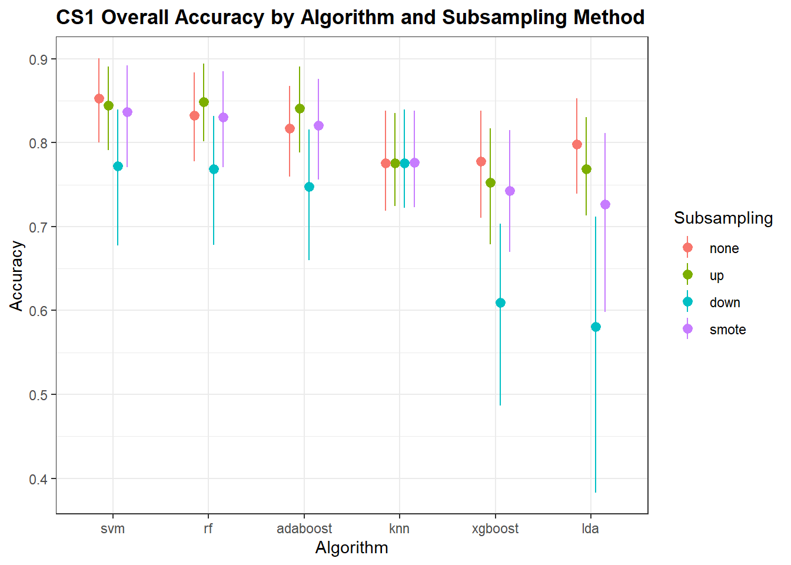
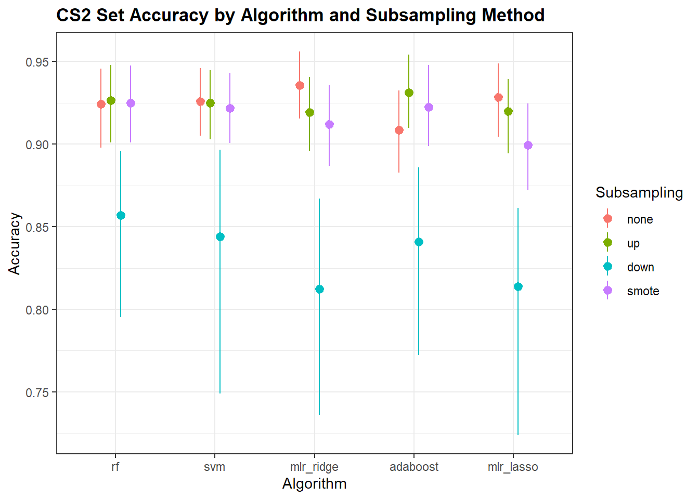

4 Results
Here we show internal validation summaries for both CS1 and CS2. The accuracy and F1-scores are the measures of interest. Algorithms are sorted by descending value. The point ranges show the median, 5th and 95th percentiles, coloured by subsampling methods.
4.1 CS1
4.1.1 Accuracy

Figure 4.1: CS1 Accuracy
4.1.2 F1-Score

Figure 4.2: CS1 F1-Score

Figure 4.3: CS1 Class-Specific F1-Score
4.2 CS2
4.2.1 Accuracy

Figure 4.4: CS2 Accuracy
4.2.2 F1-Score

Figure 4.5: CS2 F1-Score

Figure 4.6: CS2 Class-Specific F1-Score